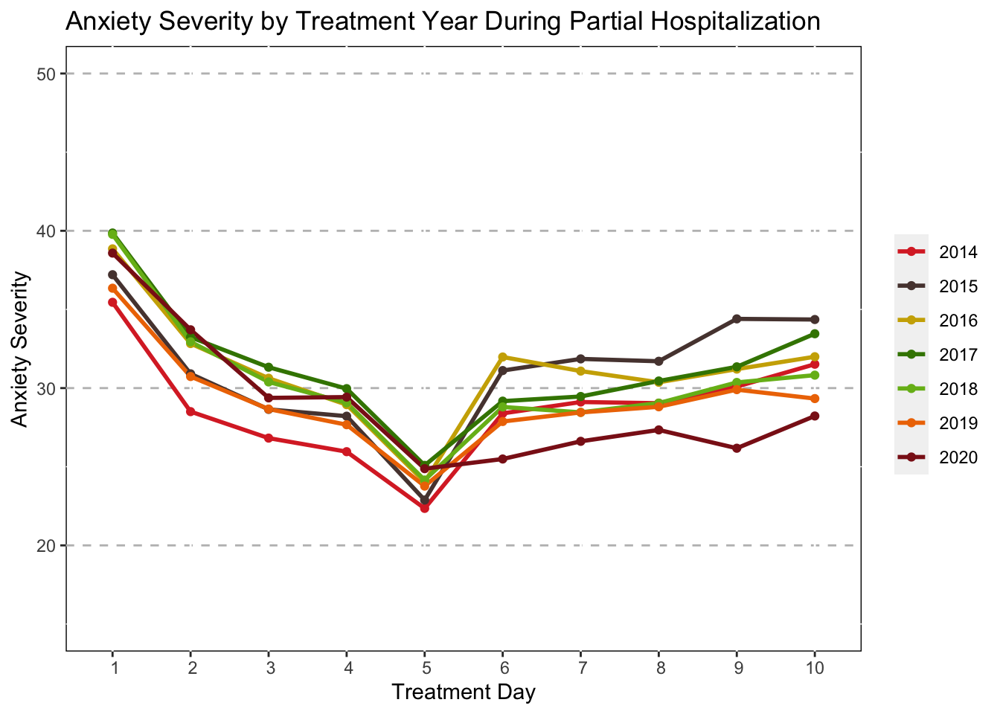

Treatment Progression Visualizations
The following code visualizes how patients scores on anxiety and depression measures change over the duration of treatment based upon sociodemographics and treatment information.
Average Symptom Severity Treatment Progress Charts
Create Data Frames
Mothership_Long <- gather(Mothership,rm,CUXOS,Day1_CUXOS:Day40_CUXOS,factor_key = "T")
Mothership_Long <- Mothership_Long[order(Mothership_Long$ID1),]
#Create a Time Variable
Mothership_Long$TxDay <- NA
Mothership_Long$TxDay[Mothership_Long$rm=="Day1_CUXOS"]<-1
Mothership_Long$TxDay[Mothership_Long$rm=="Day2_CUXOS"]<-2
Mothership_Long$TxDay[Mothership_Long$rm=="Day3_CUXOS"]<-3
Mothership_Long$TxDay[Mothership_Long$rm=="Day4_CUXOS"]<-4
Mothership_Long$TxDay[Mothership_Long$rm=="Day5_CUXOS"]<-5
Mothership_Long$TxDay[Mothership_Long$rm=="Day6_CUXOS"]<-6
Mothership_Long$TxDay[Mothership_Long$rm=="Day7_CUXOS"]<-7
Mothership_Long$TxDay[Mothership_Long$rm=="Day8_CUXOS"]<-8
Mothership_Long$TxDay[Mothership_Long$rm=="Day9_CUXOS"]<-9
Mothership_Long$TxDay[Mothership_Long$rm=="Day10_CUXOS"]<-10
Mothership_Long$TxDay[Mothership_Long$rm=="Day11_CUXOS"]<-11
Mothership_Long$TxDay[Mothership_Long$rm=="Day12_CUXOS"]<-12
Mothership_Long$TxDay[Mothership_Long$rm=="Day13_CUXOS"]<-13
Mothership_Long$TxDay[Mothership_Long$rm=="Day14_CUXOS"]<-14
Mothership_Long$TxDay[Mothership_Long$rm=="Day15_CUXOS"]<-15
Mothership_Long$TxDay[Mothership_Long$rm=="Day16_CUXOS"]<-16
Mothership_Long$TxDay[Mothership_Long$rm=="Day17_CUXOS"]<-17
Mothership_Long$TxDay[Mothership_Long$rm=="Day18_CUXOS"]<-18
Mothership_Long$TxDay[Mothership_Long$rm=="Day19_CUXOS"]<-19
Mothership_Long$TxDay[Mothership_Long$rm=="Day20_CUXOS"]<-20
#Create a New Data Set with an Average Anxiety Variable
Mothership_Mean_CUXOS<-Mothership_Long %>%
group_by(TxDay) %>%
summarise(mean_CUXOS=mean(CUXOS,na.rm=TRUE))
# data frame by druation
Mothership_Mean_CUXOS_duration<-Mothership_Long %>%
group_by(Duration,TxDay) %>%
summarise(mean_CUXOS=mean(CUXOS,na.rm=TRUE))
Mothership_duration_CUXOS<-Mothership_Mean_CUXOS_duration[1:83,]
Mothership_Long <- gather(Mothership,rm,CUDOS,Day1_CUDOS:Day40_CUDOS,factor_key = "T")
Mothership_Long <- Mothership_Long[order(Mothership_Long$ID1),]
#Create a Time Variable
Mothership_Long$TxDay <- NA
Mothership_Long$TxDay[Mothership_Long$rm=="Day1_CUDOS"]<-1
Mothership_Long$TxDay[Mothership_Long$rm=="Day2_CUDOS"]<-2
Mothership_Long$TxDay[Mothership_Long$rm=="Day3_CUDOS"]<-3
Mothership_Long$TxDay[Mothership_Long$rm=="Day4_CUDOS"]<-4
Mothership_Long$TxDay[Mothership_Long$rm=="Day5_CUDOS"]<-5
Mothership_Long$TxDay[Mothership_Long$rm=="Day6_CUDOS"]<-6
Mothership_Long$TxDay[Mothership_Long$rm=="Day7_CUDOS"]<-7
Mothership_Long$TxDay[Mothership_Long$rm=="Day8_CUDOS"]<-8
Mothership_Long$TxDay[Mothership_Long$rm=="Day9_CUDOS"]<-9
Mothership_Long$TxDay[Mothership_Long$rm=="Day10_CUDOS"]<-10
Mothership_Long$TxDay[Mothership_Long$rm=="Day11_CUDOS"]<-11
Mothership_Long$TxDay[Mothership_Long$rm=="Day12_CUDOS"]<-12
Mothership_Long$TxDay[Mothership_Long$rm=="Day13_CUDOS"]<-13
Mothership_Long$TxDay[Mothership_Long$rm=="Day14_CUDOS"]<-14
Mothership_Long$TxDay[Mothership_Long$rm=="Day15_CUDOS"]<-15
Mothership_Long$TxDay[Mothership_Long$rm=="Day16_CUDOS"]<-16
Mothership_Long$TxDay[Mothership_Long$rm=="Day17_CUDOS"]<-17
Mothership_Long$TxDay[Mothership_Long$rm=="Day18_CUDOS"]<-18
Mothership_Long$TxDay[Mothership_Long$rm=="Day19_CUDOS"]<-19
Mothership_Long$TxDay[Mothership_Long$rm=="Day20_CUDOS"]<-20
#Create a New Data Set with an Average Anxiety Variable
Mothership_Mean_CUDOS<-Mothership_Long %>%
group_by(TxDay) %>%
summarise(mean_CUDOS=mean(CUDOS,na.rm=TRUE))Anxiety
#Plot the Anxiety Mean for Full Sample
ggplot(data=Mothership_Mean_CUXOS,aes(x=TxDay,y=mean_CUXOS))+
geom_line(size=1,color="red")+
geom_point(color="red")+
theme(panel.grid.major.y = element_line(color = "grey",size = 0.5,linetype = 2))+
ggtitle("Mean Anxiety Severity During Partial Hospitalization")+
scale_x_discrete(name="Treatment Day",limits=c(1,2,3,4,5,6,7,8,9,10,11,12,13,14,15,16,17,18,19,20))+
scale_y_continuous(name="Anxiety Severity",limits=c(20,40,by=5))+
theme(panel.background=NULL)This visualization suggests that some patients get better quickly, while those that stay in treatment longer have higher anxiety.
Plot means based upon duration of treatment
# New dataset for the treatment duration Anxiety plot
# Mothership_Mean_CUXOS<-Mothership_Long %>%
# group_by(Duration,TxDay) %>%
# summarise(mean_CUXOS=mean(CUXOS,na.rm=TRUE))
#
# Mothership_duration_CUXOS<-Mothership_Mean_CUXOS[1:83,]
#delete weird Na values and put NA for values
Mothership_duration_CUXOS[6:20,3] = NA
Mothership_duration_CUXOS[37:41,3] = NA
Mothership_duration_CUXOS[74:83,3] = NA
Mothership_duration_CUXOS<-Mothership_duration_CUXOS[(-21),]
Mothership_duration_CUXOS<-Mothership_duration_CUXOS[(-41),]
Mothership_duration_CUXOS<-Mothership_duration_CUXOS[(-61),]
Mothership_duration_CUXOS## # A tibble: 80 × 3
## # Groups: Duration [4]
## Duration TxDay mean_CUXOS
## <fct> <dbl> <dbl>
## 1 1-5 1 35.4
## 2 1-5 2 27.8
## 3 1-5 3 24.4
## 4 1-5 4 20.6
## 5 1-5 5 9.98
## 6 1-5 6 NA
## 7 1-5 7 NA
## 8 1-5 8 NA
## 9 1-5 9 NA
## 10 1-5 10 NA
## # … with 70 more rowsggplot(data=Mothership_duration_CUXOS,aes(x=TxDay,y=mean_CUXOS,group=Duration,color=Duration))+
geom_line(size=1)+
geom_point()+
theme(panel.grid.major.y = element_line(color = "grey",size = 0.5,linetype = 2))+
ggtitle("Mean Anxiety Severity During Partial Hospitalization")+
scale_x_discrete(name="Treatment Day",limits=c(1,2,3,4,5,6,7,8,9,10,11,12,13,14,15,16,17,18,19,20))+
scale_y_continuous(name="Anxiety Severity",limits=c(5,50,by=5))+
scale_color_manual(values=c("#BB9D00","red",
"darkred","orange"))+
theme(panel.background=NULL)+
labs(subtitle = "Broken up by Duration of Treatment")
This shows that those who are in treatment longer tend to have higher anxiety than those who are in treatment for less time.
Depression
#Plot the Depression Mean for Full Sample
ggplot(data=Mothership_Mean_CUDOS,aes(x=TxDay,y=mean_CUDOS))+
geom_line(size=1,color="#0065A3")+
geom_point(color="#0065A3")+
theme(panel.grid.major.y = element_line(color = "grey",size = 0.5,linetype = 2))+
ggtitle("Mean Depression Severity During Partial Hospitalization")+
scale_x_discrete(name="Treatment Day",limits=c(1,2,3,4,5,6,7,8,9,10,11,12,13,14,15,16,17,18,19,20))+
scale_y_continuous(name="Depression Severity",limits=c(20,35,by=5))+
theme(panel.background=NULL) Plot means based upon duration of treatment
#plot depression mean with each group
# New dataset for the treatment duration depression plot
Mothership_Mean_CUDOS<-Mothership_Long %>%
group_by(Duration,TxDay) %>%
summarise(mean_CUDOS=mean(CUDOS,na.rm=TRUE))
Mothership_duration_CUDOS<-Mothership_Mean_CUDOS[1:83,]
#delete weird Na values and put NA for values
Mothership_duration_CUDOS[6:20,3] = NA
Mothership_duration_CUDOS[37:41,3] = NA
Mothership_duration_CUDOS[74:83,3] = NA
Mothership_duration_CUDOS<-Mothership_duration_CUDOS[(-21),]
Mothership_duration_CUDOS<-Mothership_duration_CUDOS[(-41),]
Mothership_duration_CUDOS<-Mothership_duration_CUDOS[(-61),]
Mothership_duration_CUDOS## # A tibble: 80 × 3
## # Groups: Duration [4]
## Duration TxDay mean_CUDOS
## <fct> <dbl> <dbl>
## 1 1-5 1 31.1
## 2 1-5 2 24.0
## 3 1-5 3 21.3
## 4 1-5 4 18.6
## 5 1-5 5 16.1
## 6 1-5 6 NA
## 7 1-5 7 NA
## 8 1-5 8 NA
## 9 1-5 9 NA
## 10 1-5 10 NA
## # … with 70 more rowsggplot(data=Mothership_duration_CUDOS,aes(x=TxDay,y=mean_CUDOS,group=Duration,color=Duration))+
geom_line(size=1)+
geom_point()+
theme(panel.grid.major.y = element_line(color = "grey",size = 0.5,linetype = 2))+
ggtitle("Mean Depression Severity During Partial Hospitalization")+
labs(subtitle = "Broken up by Discharge Date")+
scale_x_discrete(name="Treatment Day",limits=c(1,2,3,4,5,6,7,8,9,10,11,12,13,14,15,16,17,18,19,20))+
scale_y_continuous(name="Depression Severity",limits=c(15,40,by=5))+
scale_color_manual(values=c("skyblue","#0065A3",
"navy","blue"))+
theme(panel.background=NULL)Treatment Progress by Race
Anxiety
Mothership<-read.csv("~/Desktop/Coding/data/Mothership_Vis.csv")
Mothership<-mutate(Mothership,
DC_status_1 = as.factor(DC_status_1),
Education_1 = as.factor(Education_1),
Gender_1 = as.factor(Gender_1),
Relationship_1 = as.factor(Relationship_1),
Sexuality_1 = as.factor(Sexuality_1),
IPT_track_1 = as.factor(IPT_track_1),
Race_1 = as.factor(Race_1),
Education_1 = as.factor(Education_1),
Duration = as.factor(Duration),
)
Mothership$Intake_1<-ymd(Mothership$Intake_1,locale = "en_US.UTF-8")
Mothership_Long_anx <- gather(Mothership,rm,CUXOS,Day1_CUXOS:Day40_CUXOS,factor_key = "T")
Mothership_Long_anx <- Mothership_Long_anx[order(Mothership_Long_anx$ID1),]
#Create a Time Variable
Mothership_Long_anx$TxDay <- NA
Mothership_Long_anx$TxDay[Mothership_Long_anx$rm=="Day1_CUXOS"]<-1
Mothership_Long_anx$TxDay[Mothership_Long_anx$rm=="Day2_CUXOS"]<-2
Mothership_Long_anx$TxDay[Mothership_Long_anx$rm=="Day3_CUXOS"]<-3
Mothership_Long_anx$TxDay[Mothership_Long_anx$rm=="Day4_CUXOS"]<-4
Mothership_Long_anx$TxDay[Mothership_Long_anx$rm=="Day5_CUXOS"]<-5
Mothership_Long_anx$TxDay[Mothership_Long_anx$rm=="Day6_CUXOS"]<-6
Mothership_Long_anx$TxDay[Mothership_Long_anx$rm=="Day7_CUXOS"]<-7
Mothership_Long_anx$TxDay[Mothership_Long_anx$rm=="Day8_CUXOS"]<-8
Mothership_Long_anx$TxDay[Mothership_Long_anx$rm=="Day9_CUXOS"]<-9
Mothership_Long_anx$TxDay[Mothership_Long_anx$rm=="Day10_CUXOS"]<-10
#Overall race
Mothership_Mean_CUXOS_Race<-Mothership_Long_anx %>%
group_by(TxDay,Race_1) %>%
summarise(mean_CUXOS=mean(CUXOS,na.rm=TRUE))
Mothership_Mean_CUXOS_Race<-Mothership_Mean_CUXOS_Race[1:70,]
Mothership_Mean_CUXOS_Race## # A tibble: 70 × 3
## # Groups: TxDay [10]
## TxDay Race_1 mean_CUXOS
## <dbl> <fct> <dbl>
## 1 1 Asian 31.2
## 2 1 Black 36.3
## 3 1 Hispanic 43.0
## 4 1 Other 39.7
## 5 1 Portugese 39.2
## 6 1 White 37.5
## 7 1 <NA> 40
## 8 2 Asian 25.7
## 9 2 Black 29.7
## 10 2 Hispanic 36.8
## # … with 60 more rows# plot
ggplot(data=subset(Mothership_Mean_CUXOS_Race,!is.na(Race_1)),
aes(x=TxDay,y=mean_CUXOS,group=Race_1,color=Race_1))+
geom_line(size=1)+
geom_point()+
labs(title ="Anxiety Severity by Race During Partial Hospitalization")+
scale_x_discrete(name="Treatment Day",limits=c(1,2,3,4,5,6,7,8,9,10))+
scale_y_continuous(name="Anxiety Severity",limits=c(0,60,by=5))+
scale_color_manual(values=c("#DA2E2E","#57423E",
"gold3","#3E8300",
"#77B81C","darkorange2"))+
theme(panel.grid.major.y = element_line(color = "grey",size = 0.5,linetype = 2))+
theme(panel.background=NULL)+
theme(legend.title=element_blank())Depression
Mothership_Long_dep <- gather(Mothership,rm,CUDOS,Day1_CUDOS:Day40_CUDOS,factor_key = "T")
Mothership_Long_dep <- Mothership_Long_dep[order(Mothership_Long_dep$ID1),]
#Create a Time Variable
Mothership_Long_dep$TxDay <- NA
Mothership_Long_dep$TxDay[Mothership_Long_dep$rm=="Day1_CUDOS"]<-1
Mothership_Long_dep$TxDay[Mothership_Long_dep$rm=="Day2_CUDOS"]<-2
Mothership_Long_dep$TxDay[Mothership_Long_dep$rm=="Day3_CUDOS"]<-3
Mothership_Long_dep$TxDay[Mothership_Long_dep$rm=="Day4_CUDOS"]<-4
Mothership_Long_dep$TxDay[Mothership_Long_dep$rm=="Day5_CUDOS"]<-5
Mothership_Long_dep$TxDay[Mothership_Long_dep$rm=="Day6_CUDOS"]<-6
Mothership_Long_dep$TxDay[Mothership_Long_dep$rm=="Day7_CUDOS"]<-7
Mothership_Long_dep$TxDay[Mothership_Long_dep$rm=="Day8_CUDOS"]<-8
Mothership_Long_dep$TxDay[Mothership_Long_dep$rm=="Day9_CUDOS"]<-9
Mothership_Long_dep$TxDay[Mothership_Long_dep$rm=="Day10_CUDOS"]<-10
#Overall race
Mothership_Mean_CUDOS_Race<-Mothership_Long_dep %>%
group_by(TxDay,Race_1) %>%
summarise(mean_CUDOS=mean(CUDOS,na.rm=TRUE))
# plot
ggplot(data=subset(Mothership_Mean_CUDOS_Race,!is.na(Race_1)),
aes(x=TxDay,y=mean_CUDOS,group=Race_1,color=Race_1))+
geom_line(size=1)+
geom_point()+
labs(title ="Depression Severity by Race During Partial Hospitalization")+
scale_x_discrete(name="Treatment Day",limits=c(1,2,3,4,5,6,7,8,9,10))+
scale_y_continuous(name="Depression Severity",limits=c(10,40,by=5))+
scale_color_manual(values=c("#209845","#3D4A3E","darkgreen",
"#0098DB","#0065A3","#A0AFA1"))+
theme(panel.grid.major.y = element_line(color = "grey",size = 0.5,linetype = 2))+
theme(panel.background=NULL)+
theme(legend.title=element_blank())ggplot(data=subset(Mothership_Mean_CUDOS_Race,!is.na(Race_1)),
aes(x=TxDay,y=mean_CUDOS,group=Race_1,color=Race_1))+
geom_line(size=1)+
geom_point()+
labs(title ="Depression Severity by Race During Partial Hospitalization")+
scale_x_discrete(name="Treatment Day",limits=c(1,2,3,4,5,6,7,8,9,10))+
scale_y_continuous(name="Depression Severity",limits=c(10,40,by=5))+
scale_color_manual(values=c("#209845","lightgrey","lightgrey",
"lightgrey","lightgrey","lightgrey"))+
theme(panel.grid.major.y = element_line(color = "grey",size = 0.5,linetype = 2))+
theme(panel.background=NULL)+
theme(legend.title=element_blank())ggplot(data=subset(Mothership_Mean_CUDOS_Race,!is.na(Race_1)),
aes(x=TxDay,y=mean_CUDOS,group=Race_1,color=Race_1))+
geom_line(size=1)+
geom_point()+
labs(title ="Depression Severity by Race During Partial Hospitalization")+
scale_x_discrete(name="Treatment Day",limits=c(1,2,3,4,5,6,7,8,9,10))+
scale_y_continuous(name="Depression Severity",limits=c(10,40,by=5))+
scale_color_manual(values=c("lightgrey","lightgrey","darkgreen",
"lightgrey","#0065A3","lightgrey"))+
theme(panel.grid.major.y = element_line(color = "grey",size = 0.5,linetype = 2))+
theme(panel.background=NULL)+
theme(legend.title=element_blank())Treatment Progress by Gender Idenitity
Anxiety
#GENDER IDENTITY
#Create a New Data Set with an Average Anxiety Variable and Gender
Mothership_Mean_CUXOS_Gender<-Mothership_Long_anx %>%
group_by(TxDay,Gender_1) %>%
summarise(mean_CUXOS=mean(CUXOS,na.rm=TRUE))
Mothership_Mean_CUXOS_Gender <-filter(Mothership_Mean_CUXOS_Gender,
Gender_1 != "Unknown",
Gender_1 != "Non-Binary",
Gender_1 != "Other"
)
#Create the Anxiety Line Graph by Gender
ggplot(data=subset(Mothership_Mean_CUXOS_Gender,!is.na(Gender_1)),
aes(x=TxDay,y=mean_CUXOS,group=Gender_1,color=Gender_1))+
geom_line(size=1)+
geom_point()+
ggtitle("Anxiety Severity by Gender During Partial Hospitalization")+
scale_x_discrete(name="Treatment Day",limits=c(1,2,3,4,5,6,7,8,9,10))+
scale_y_continuous(name="Anxiety Severity",limits=c(15,45,by=5))+
scale_color_manual(values=c("#DA2E2E","#57423E"))+
theme(panel.grid.major.y = element_line(color = "grey",size = 0.5,linetype = 2))+
theme(panel.background=NULL)+
theme(legend.title=element_blank())Depression
#Create a New Data Set with an Average Depression Variable and Gender
Mothership_Mean_CUDOS_Gender<-Mothership_Long_dep %>%
group_by(TxDay,Gender_1) %>%
summarise(mean_CUDOS=mean(CUDOS,na.rm=TRUE))
Mothership_Mean_CUDOS_Gender <-filter(Mothership_Mean_CUDOS_Gender,
Gender_1 != "Unknown",
Gender_1 != "Non-Binary",
Gender_1 != "Other"
)
#Create the Depression Line Graph by Gender
ggplot(data=subset(Mothership_Mean_CUDOS_Gender,!is.na(Gender_1)),
aes(x=TxDay,y=mean_CUDOS,group=Gender_1,color=Gender_1))+
geom_line(size=1)+
geom_point()+
ggtitle("Depression Severity by Gender During Partial Hospitalization")+
scale_x_discrete(name="Treatment Day",limits=c(1,2,3,4,5,6,7,8,9,10))+
scale_y_continuous(name="Depression Severity",limits=c(15,45,by=5))+
scale_color_manual(values=c("#209845","#3D4A3E","#A0AFA1",
"#0098DB","#0065A3"))+
theme(panel.grid.major.y = element_line(color = "grey",size = 0.5,linetype = 2))+
theme(panel.background=NULL)+
theme(legend.title=element_blank())Treatment Progress by Treatment Track
Anxiety
#Create a New Data Set with an Average Anxiety Variable and Track
Mothership_Mean_CUXOS_Track<-Mothership_Long_anx %>%
group_by(TxDay,IPT_track_1) %>%
summarise(mean_CUXOS=mean(CUXOS,na.rm=TRUE))
#Create the Anxiety Line Graph by Treatment Track
ggplot(data=subset(Mothership_Mean_CUXOS_Track,!is.na(IPT_track_1)),
aes(x=TxDay,y=mean_CUXOS,group=IPT_track_1,color=IPT_track_1))+
geom_line(size=1)+
geom_point()+
ggtitle("Anxiety Severity by Treatment Track During Partial Hospitalization")+
scale_x_discrete(name="Treatment Day",limits=c(1,2,3,4,5,6,7,8,9,10))+
scale_y_continuous(name="Anxiety Severity",limits=c(20,46,by=5))+
scale_color_manual(values=c("#DA2E2E","#57423E","gold3"))+
theme(panel.grid.major.y = element_line(color = "grey",size = 0.5,linetype = 2))+
theme(panel.background=NULL)+
theme(legend.title=element_blank())Depression
#Create a New Data Set with an Average Depression Variable and Track
Mothership_Mean_CUDOS_Track<-Mothership_Long_dep %>%
group_by(TxDay,IPT_track_1) %>%
summarise(mean_CUDOS=mean(CUDOS,na.rm=TRUE))
#Create the Depression Line Graph by Treatment Track
ggplot(data=subset(Mothership_Mean_CUDOS_Track,!is.na(IPT_track_1)),
aes(x=TxDay,y=mean_CUDOS,group=IPT_track_1,color=IPT_track_1))+
geom_line(size=1)+
geom_point()+
ggtitle("Depression Severity by Treatment Track During Partial Hospitalization")+
scale_x_discrete(name="Treatment Day",limits=c(1,2,3,4,5,6,7,8,9,10))+
scale_y_continuous(name="Depression Severity",limits=c(20,40,by=5))+
scale_color_manual(values=c("#209845","#3D4A3E","#0065A3"))+
theme(panel.grid.major.y = element_line(color = "grey",size = 0.5,linetype = 2))+
theme(panel.background=NULL)+
theme(legend.title=element_blank())Treatment progress by Education
Anxiety
#Create a New Data Set with an Average Anxiety Variable and Education
Mothership_Mean_CUXOS_Ed<-Mothership_Long_anx %>%
group_by(TxDay,Education_1) %>%
summarise(mean_CUXOS=mean(CUXOS,na.rm=TRUE))
#Create the Anxiety Line Graph by Education
ggplot(data=subset(Mothership_Mean_CUXOS_Ed,!is.na(Education_1)),
aes(x=TxDay,y=mean_CUXOS,group=Education_1,color=Education_1))+
geom_line(size=1)+
geom_point()+
ggtitle("Anxiety Severity by Education Level During Partial Hospitalization")+
scale_x_discrete(name="Treatment Day",limits=c(1,2,3,4,5,6,7,8,9,10))+
scale_y_continuous(name="Anxiety Severity",limits=c(20,50,by=5))+
scale_color_manual(values=c("#DA2E2E","#57423E",
"gold3","#3E8300",
"#77B81C","darkorange2",
"#798897","#FD85AE"))+
theme(panel.grid.major.y = element_line(color = "grey",size = 0.5,linetype = 2))+
theme(panel.background=NULL)ggplot(data=subset(Mothership_Mean_CUXOS_Ed,!is.na(Education_1)),
aes(x=TxDay,y=mean_CUXOS,group=Education_1,color=Education_1))+
geom_line(size=1)+
geom_point()+
ggtitle("Anxiety Severity by Education Level During Partial Hospitalization")+
scale_x_discrete(name="Treatment Day",limits=c(1,2,3,4,5,6,7,8,9,10))+
scale_y_continuous(name="Anxiety Severity",limits=c(20,50,by=5))+
scale_color_manual(values=c("#DA2E2E","lightgrey","lightgrey",
"gold3","lightgrey","lightgrey",
"lightgrey","lightgrey"))+
theme(panel.grid.major.y = element_line(color = "grey",size = 0.5,linetype = 2))+
theme(panel.background=NULL)Depression
#Create a New Data Set with an Average Depression Variable and Education
Mothership_Mean_CUDOS_Ed<-Mothership_Long_dep %>%
group_by(TxDay,Education_1) %>%
summarise(mean_CUDOS=mean(CUDOS,na.rm=TRUE))
#Create the Depression Line Graph by Education
ggplot(data=subset(Mothership_Mean_CUDOS_Ed,!is.na(Education_1)),
aes(x=TxDay,y=mean_CUDOS,group=Education_1,color=Education_1))+
geom_line(size=.75)+
geom_point(size=.75)+
ggtitle("Depression Severity by Education Level During Partial Hospitalization")+
scale_x_discrete(name="Treatment Day",limits=c(1,2,3,4,5,6,7,8,9,10))+
scale_y_continuous(name="Depression Severity",limits=c(20,38,by=5))+
scale_color_manual(values=c("#209845","#3D4A3E","#A0AFA1",
"#0098DB","#0065A3","darkgreen",
"#91A9F1","#7F8559"))+
theme(panel.grid.major.y = element_line(color = "grey",size = 0.5,linetype = 2))+
theme(panel.background=NULL)+
theme(legend.title=element_blank())ggplot(data=subset(Mothership_Mean_CUDOS_Ed,!is.na(Education_1)),
aes(x=TxDay,y=mean_CUDOS,group=Education_1,color=Education_1))+
geom_line(size=.75)+
geom_point(size=.75)+
ggtitle("Depression Severity by Education Level During Partial Hospitalization")+
scale_x_discrete(name="Treatment Day",limits=c(1,2,3,4,5,6,7,8,9,10))+
scale_y_continuous(name="Depression Severity",limits=c(20,38,by=5))+
scale_color_manual(values=c("#209845","lightgrey","lightgrey",
"#0098DB","lightgrey","lightgrey",
"lightgrey","lightgrey"))+
theme(panel.grid.major.y = element_line(color = "grey",size = 0.5,linetype = 2))+
theme(panel.background=NULL)+
theme(legend.title=element_blank())Treatment Progress by Treatment Year
Anxiety
#Create a New Data Set with an Average Anxiety Variable and Year
Mothership_Mean_CUXOS_Year<-Mothership_Long_anx %>%
group_by(TxDay,TxYear) %>%
summarise(mean_CUXOS=mean(CUXOS,na.rm=TRUE))
#Create the Anxiety Line Graph by Year
ggplot(data=subset(Mothership_Mean_CUXOS_Year,!is.na(TxYear)),
aes(x=TxDay,y=mean_CUXOS,group=as.factor(TxYear),color=as.factor(TxYear)))+
geom_line(size=1)+
geom_point()+
ggtitle("Anxiety Severity by Treatment Year During Partial Hospitalization")+
scale_x_discrete(name="Treatment Day",limits=c(1,2,3,4,5,6,7,8,9,10))+
scale_y_continuous(name="Anxiety Severity",limits=c(15,50,by=5))+
scale_color_manual(values=c("#DA2E2E","#57423E",
"gold3","#3E8300",
"#77B81C","darkorange2",
"firebrick4","#FD85AE","#798897"))+
theme(panel.grid.major.y = element_line(color = "grey",size = 0.5,linetype = 2))+
theme(panel.background=NULL)+
theme(legend.title=element_blank())
ggplot(data=subset(Mothership_Mean_CUXOS_Year,!is.na(TxYear)),
aes(x=TxDay,y=mean_CUXOS,group=as.factor(TxYear),color=as.factor(TxYear)))+
geom_line(size=1)+
geom_point()+
ggtitle("Anxiety Severity by Treatment Year During Partial Hospitalization")+
scale_x_discrete(name="Treatment Day",limits=c(1,2,3,4,5,6,7,8,9,10))+
scale_y_continuous(name="Anxiety Severity",limits=c(15,50,by=5))+
scale_color_manual(values=c("lightgrey","lightgrey",
"lightgrey","lightgrey",
"lightgrey","lightgrey",
"firebrick4","lightgrey","lightgrey"))+
theme(panel.grid.major.y = element_line(color = "grey",size = 0.5,linetype = 2))+
theme(panel.background=NULL)+
theme(legend.title=element_blank())Depresssion
#Create a New Data Set with an Average Depression Variable and Year
Mothership_Mean_CUDOS_Year<-Mothership_Long_dep %>%
group_by(TxDay,TxYear) %>%
summarise(mean_CUDOS=mean(CUDOS,na.rm=TRUE))
str(Mothership_Long_dep$TxYear)## int [1:346680] 2014 2014 2014 2014 2014 2014 2014 2014 2014 2014 ...#Create the Depression Line Graph by Year
ggplot(data=subset(Mothership_Mean_CUDOS_Year,!is.na(TxYear)),
aes(x=TxDay,y=mean_CUDOS,group=as.factor(TxYear),color=as.factor(TxYear)))+
geom_line(size=1)+
geom_point()+
ggtitle("Depression Severity by Treatment Year During Partial Hospitalization")+
scale_x_discrete(name="Treatment Day",limits=c(1,2,3,4,5,6,7,8,9,10))+
scale_y_continuous(name="Depression Severity",limits=c(20,40,by=5))+
scale_color_manual(values=c("#209845","#3D4A3E","#A0AFA1",
"#0098DB","#91A9F1","darkgreen",
"#0065A3","#7F8559","#4B5D8E"))+
theme(panel.grid.major.y = element_line(color = "grey",size = 0.5,linetype = 2))+
theme(panel.background=NULL)+
theme(legend.title=element_blank())#Create the Depression Line Graph by Year
ggplot(data=subset(Mothership_Mean_CUDOS_Year,!is.na(TxYear)),
aes(x=TxDay,y=mean_CUDOS,group=as.factor(TxYear),color=as.factor(TxYear)))+
geom_line(size=1)+
geom_point()+
ggtitle("Depression Severity by Treatment Year During Partial Hospitalization")+
scale_x_discrete(name="Treatment Day",limits=c(1,2,3,4,5,6,7,8,9,10))+
scale_y_continuous(name="Depression Severity",limits=c(20,40,by=5))+
scale_color_manual(values=c("lightgrey","lightgrey","lightgrey",
"lightgrey","lightgrey","lightgrey",
"#0065A3","lightgrey","lightgrey"))+
theme(panel.grid.major.y = element_line(color = "grey",size = 0.5,linetype = 2))+
theme(panel.background=NULL)+
theme(legend.title=element_blank())